6. Optimization Algorithms
© The Author(s), under exclusive license to APress Media, LLC, part of Springer Nature 2024
V. DolzhenkoAlgorithmic Trading Systems and Strategies: A New Approachhttps://doi.org/10.1007/979-8-8688-0357-4_6
6. Optimization Algorithms
Viktoria Dolzhenko1
(1)
San Jose, Costa Rica
One of the key modules of our system is the optimization algorithm module, which searches for and optimizes strategies in the strategy search subsystem.
Our task of finding a profitable strategy has several features such as nonlinearity, multiextremality, complete absence of analytical expression, high dimension of the search space, and high computational complexity of the optimized function. All of these features explain why there is no universal algorithm for solving the optimization problem and finding a profitable strategy. This means that the optimization module must implement a number of different optimization algorithms.
To solve the global optimization problem, several classes of optimization algorithms have been developed, one of which is the population algorithms class.
In population algorithms, simultaneous work is carried out on several options when solving an optimization problem, in contrast to classical algorithms, in which only one candidate evolves.
Population algorithms have a number of advantages that make them perfect for solving our problem.
-
They have proven themselves to be excellent in solving problems of high dimensionality, multimodality, and low formalization.
-
They are not algorithms with a strictly defined order of steps. They rather have a set of standard operations and rules with which you can create a large number of your own variations of optimization algorithms.
-
They are most effective in finding a suboptimal, that is, close to optimal, solution. To find a profitable strategy, a suboptimal solution is often enough.
In this chapter, I will cover the minimum necessary theory that will allow you to dive into the world of population algorithms and implement an optimization module.
Formulation of the Problem
In optimization theory, there are two types of optimization problems: deterministic and stochastic. In the first case, the target function is deterministic. That is, it does not contain random parameters. The stochastic function contains it. Our target function, namely, the function for calculating the performance strategy on a section of historical data, is deterministic. The general formulation of a deterministic optimization problem is as follows:
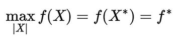
An equation reads max determinant of X, f left parenthesis X right parenthesis equals f left parenthesis X asterisk right parenthesis equals f asterisk.
|X|: The dimension of the vector of variable parameters X = x1, x1, ..., x|X|.
ƒ(X): The objective function or optimality criterion.
X*: The he required optimal solution.
f*: The esired optimal value.
D = G(X) : The set of admissible vector values X, where G(X) is the vector bounding function consisting of components g_1(_X), g_2(_X), …, g∣G∣(X) 1 2 ∣ G∣.
The determinism of the task means that the objective function ƒ(X) and the limiting function G(X) do not contain random parameters.
If |X| > 1, then the problem is called multiparameter.
An objective function may have points at which it reaches its largest or smallest value. These points are called extrema. If the objective function has several such points, then this function is said to be multi-extremal.
A test is an operation of one-time calculation of the target and limiting functions. In our case, calculating the objective function is an expensive operation that requires a lot of computing resources, so the main requirement for optimization algorithms is to find the optimal value of the objective function in the least number of tests.
Population Algorithms
The problem of finding the optimal solution is now clear, so let’s start solving it using population algorithms.
The main idea of these algorithms is based on working on several solutions at once. One solution option, in population algorithms, is called an agent. The set of agents generated at the iterative step is called a population.
The general scheme for solving an optimization problem using population algorithms includes the following steps:
-
1.
Initialization of the population. Using some algorithm, a first approximation of the solution to the optimization problem is generated. That is, the first set of agents will be generated.
-
2.
Migration. According to a certain scenario or set of operations, agents are migrated in such a way as to ultimately approach the desired extremum. That is, the next generation of agents will be created.
-
3.
Checking the search termination condition. The conditions for the end of iterations are checked. If these conditions are not met, then return to step 2.
When initializing a population, both deterministic and random algorithms can be used. If the initial population is formed near the global extremum, that is, the maximum or minimum value of the function throughout the entire definition domain, this will significantly speed up the search for the optimal solution. But in the general case, we do not have a priori information about the location of the global extremum, so often the agents of the first population are distributed evenly throughout the entire search area.
There are two popular search termination conditions. The first is by the number of iterations, when the search stops after creating a given number of generations. The second is according to the stagnation condition, when the best achieved value of the objective function does not change for a given number of generations.
It is clear that population algorithms have a highly modular structure. This means that by varying operations and migration algorithms, you can get a large variety of your own unique optimization algorithms.
In most cases, population agents have the following properties:
-
Autonomy. Agents move in the search space conditionally independently of each other.
-
Stochasticity. The process of migration or generation of new agents contains a random parameter.
-
Limited representation. All agents have information only about part of the search area they are investigating. In some algorithms, agents “share” information with each other, but in most algorithms this is not the case.
-
Decentralization. There is no hierarchy among agents.
-
Communication skills. Agents, to varying degrees, can exchange information with each other.
One of the problems in designing population algorithms is the problem of maintaining a balance between search intensity and search breadth. Intensity refers to the rate of convergence, or the speed at which the algorithm finds a solution. And the problem of search breadth is understood as diversifying this, that is, ensuring a sufficient variety of agents to increase the likelihood of finding a global extremum.
Intensification of the search requires rapid convergence, which entails a requirement for a rapid reduction in the diversity of agents. Diversification, on the contrary, is designed to provide a broader overview of the space under study, which entails the requirement to maintain a large number of agents.
A popular approach to maintaining a balance between the intensity and breadth of search is the so-called adaptation and self-adaptation mechanisms. When these mechanisms are applied, the free parameters of the algorithms gradually change so as to gradually move from diversification to intensification.
Since population algorithms are stochastic, their efficiency strongly depends on the values of random variables, which means they can achieve different results even while maintaining the same values of free parameters. For this reason, multiple runs are used to evaluate the effectiveness of algorithms. When the same algorithm is used to solve the same problem, this approach is called the multistart method.
Genetic Algorithms
Genetic algorithms are a popular type of algorithm belonging to the population class. These are the ones I will use in the search for the optimal strategy.
Genetic algorithms became known to the world after the publication of the book Adaptation in Natural and Artificial Systems (J. Holland, 1975). This class of algorithms was based on the ideas of Darwin’s theory of natural selection.
Darwin showed that the evolutionary development of the earth’s flora and fauna is based on the following principles:
-
Heredity. Some traits of parents are passed onto offspring.
-
Variability. It is difficult to find two identical individuals.
-
Natural selection. Only the fittest individuals survive.
Everyone knows that the substance that determines hereditary processes is deoxyribonucleic acid (DNA). It is the molecular biological processes of heredity that form the basis of genetic algorithms.
The structure containing DNA is called a chromosome. A gene is a specific part of a chromosome in which innate personality qualities are encoded (eye color, skin color, height, etc.). A locus is the location of a gene on a chromosome. An allele is the functional significance of each gene. A genotype is the totality of genes of a particular individual. The set of personality characteristics is called a phenotype.
To give an analogy with our system, a chromosome is a set of strategy parameter values. A gene is the value of one of the parameters, for example LookbackPeriod for the average directional index (ADX) indicator.
During the sexual reproduction of living beings, the fusion of two sex cells occurs in which the DNA of the parents interact with each other and the result is the DNA of the descendant. This procedure is called crossing.
Because of many factors, genes in the DNA of the parents’ germ cells can change. This process is called mutation. Mutated genes are passed on to the offspring and give it properties not found in either parent. If unique properties turn out to be useful, then they are likely to be retained in the population.
The diagram of a typical genetic algorithm is as follows::
-
1.
According to some algorithm, a set of individuals (agents) is created.
-
2.
Individuals are evaluated using an objective function. This means that for each individual, we calculate the objective function.
-
3.
The selection stage is carried out. That is, based on adaptability (the value of the objective function), we select individuals for crossing.
-
4.
We apply mutation and crossing operators to selected individuals. As a result, we get a new generation (population) of individuals.
-
5.
We check the algorithm stopping condition. If the condition is not met, then return to step 2.
The essence of genetic algorithms is that each new generation, on average, is more fit than the previous one.
Mutation Operators
The essence of the mutation operator is to replace gene x__i with gene  . That is, in the general case, any mutation operator consists of two stages.
. That is, in the general case, any mutation operator consists of two stages.
-
1.
Selecting genes to be replaced
-
2.
Replacing these genes
Let’s take a closer look at a few operators.
Random Operator
The method is to assign to gene x__i a random number from the interval .
The algorithm for the random mutation operator is as follows:
-
1.
We generate ƞ random integer nonmatching numbers whose values are in the interval from 1 to |X|. These numbers will be equal to the numbers of genes that will be subject to mutation. ƞ is a free parameter of the operator, which is responsible for the number of genes to be mutated.
-
2.
We generate a random number in the interval from and equate this value to the gene numbered i of the descendant.
-
3.
Using the same scheme, we mutate the remaining genes selected for mutation.
-
4.
The descendant takes the remaining genes from the original individual without changes.
The simplest implementation of this operator can be considered the implementation of the boundary mutation operator, in which the gene with equal probability. See Figure 6-1.
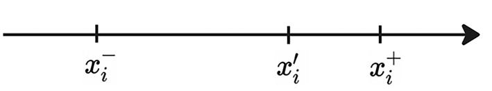
A diagram presents a number line with the intervals x negative subscript i, x dash subscript i, and x positive subscript i, in equal probabilities.
Figure 6-1
Interval of acceptable mutant gene values: example 1
Arithmetic Real Number Creep Operator
The algorithm for this operator looks exactly like the random operator algorithm. But the formula in step 2 takes the following form:
 = x__i +ξ(2_ψ_ − 1)
= x__i +ξ(2_ψ_ − 1)
ξ: This is another free parameter.
ψ: This is a random number that ranges from 0 to 1.
As a result, the value  will take values on the interval [x__i − ξ; x__i + ξ]. See Figure 6-2.
will take values on the interval [x__i − ξ; x__i + ξ]. See Figure 6-2.
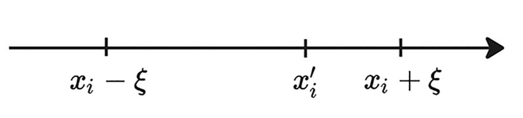
A diagram presents a number line with the intervals x subscript i minus x i, x dash subscript i, and x subscript i plus x i, in equal probabilities.
Figure 6-2
Interval of acceptable mutant gene values: example 2
Gauss Operator
According to the algorithm of this operator, the new value must deviate from the parent value x__i by an amount calculated by the Gaussian function.
 = x__i +Φ(μ, σ)
= x__i +Φ(μ, σ)
μ: This is a free operator parameter, which is the mathematical expectation or an average value. It is usually equal to 0.
σ: This is a free operator parameter. The standard deviation is responsible for how much the final value of the function will differ from the value of the mathematical expectation. See Figure 6-3.
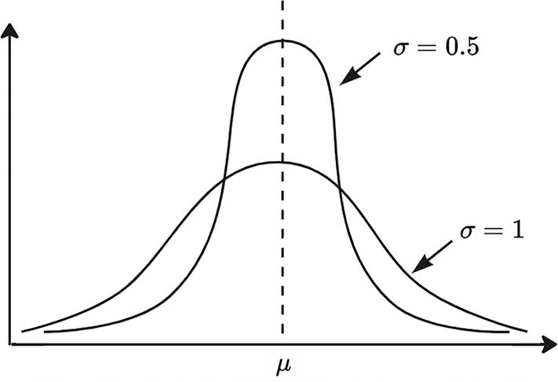
A graph of the y axis versus the x axis. It plots a bell-shaped curve for sigma equals 0.5 and a downward parabola for sigma equals 1. The midpoint is represented as mu.
Figure 6-3
Graph of the probability of assigning a value μ to a gene
Crossover Operators
The purpose of these operators is to obtain, from two parent individuals, one or more offspring individuals. Or, to put it in formulas, it creates child chromosomes based on two parent chromosomes, _X_1 and _X_2.
Let’s look at a few operators.
Flat Crossover
In this operator, the gene  of the child is a random number located in the interval from
of the child is a random number located in the interval from  to , where is the minimum of the parent gene values, and
to , where is the minimum of the parent gene values, and  is the maximum of them. See Figure 6-4.
is the maximum of them. See Figure 6-4.
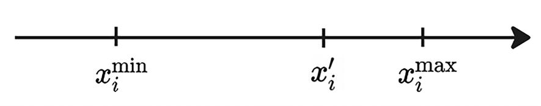
A diagram presents a number line with the intervals x minimum subscript i, x dash subscript i, and x maximum subscript i.
Figure 6-4
Range of acceptable values
Blend Crossover
In this operator, the gene  of the child is a random number located in the interval from to .
of the child is a random number located in the interval from to .
λ is a free operator parameter. Obviously, the larger it is, the more the gene of the descendant will differ from the genes of the parents. You can build your algorithm in such a way that the parameter value will be different for each gene. See Figure 6-5.
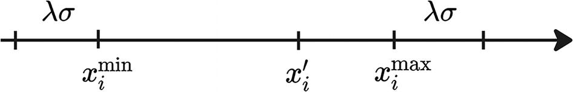
A diagram presents a number line that has the intervals x minimum subscript i, x dash subscript i, and x maximum subscript i, with equal random values lambda sigma.
Figure 6-5
Range of acceptable values
Arithmetical Crossover
According to this operator, the chromosomes of the descendants are created according to the following formula:
λ: This is a random number ranging from 0 to 1.
Heuristic Crossover
In this operator, the gene  of the descendant is calculated using the following formula:
of the descendant is calculated using the following formula:
In this formula, it is assumed that the first individual is more fit than the second.
λ: This is a random number that can range from 0 to 1.
Linear Crossover
According to this operator, three descendants will be created according to the following formulas:
See Figure 6-6.
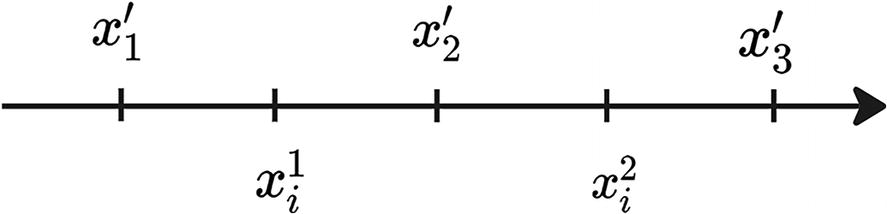
A diagram presents a number line that has the intervals x 1 subscript i and x squared subscript i, with three descendants x dash subscript 1, x dash subscript 2, and x dash subscript 3.
Figure 6-6
Range of acceptable values
Fuzzy Crossover
When you use this operator, you will end up with two children. The probability that the gene  of a daughter individual is described by a triangular probability density function designated as F(
of a daughter individual is described by a triangular probability density function designated as F( ). So for , the left corner of the triangle will be located at the value , and the right corner will be located at .
). So for , the left corner of the triangle will be located at the value , and the right corner will be located at .
λ is the operator parameter; the most commonly used value is 0.5. See Figure 6-7.
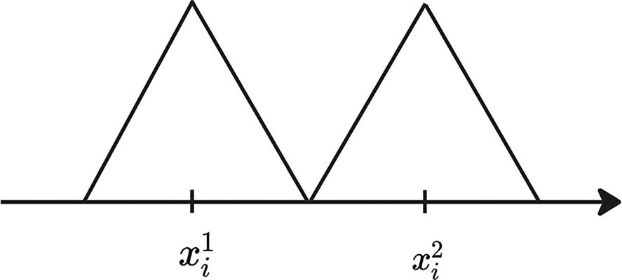
A diagram presents a number line with two triangles at the intervals x 1 subscript i and x squared subscript i.
Figure 6-7
Graph of the probability of assigning values to genes
Simulated Binary Crossover (SBX)
According to this operator, two descendants are created; the value of gene i is calculated by the following formula:
u is a number whose probability density is calculated using the following formula:
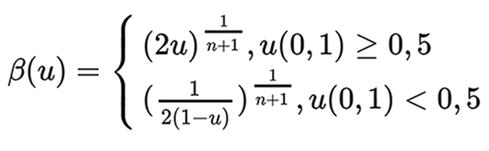
An equation reads the beta of u, which equals 2 u superscript 1 over n + 1 and 1 over 2 of 1 minus u, power 1 over n minus 1, with the u values 0, 1 greater than or equal to 0.5 and 0, 1 less than 0.5, respectively.
n is a free parameter of the operator, a number taking values from 2 to 5. An increase in the number n entails an increase in the probability that the value of the child gene will be generated in the vicinity of the value of the parent gene. See Figure 6-8.
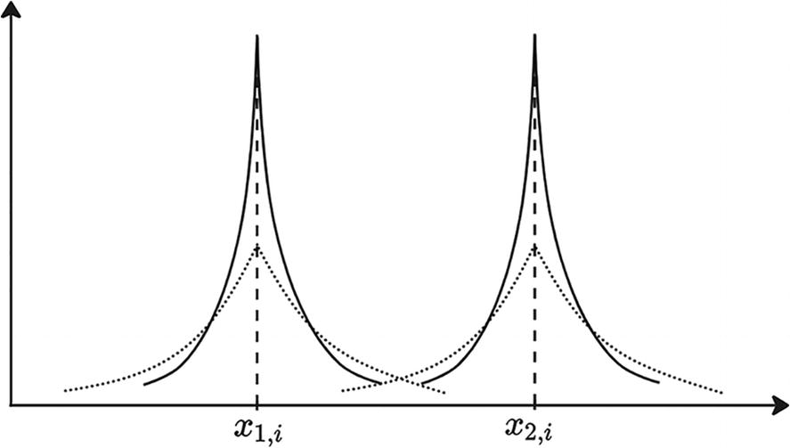
A graph of the y axis versus the x axis. It plots two spike signals with the peak point at the intervals x 1, i and x 2, i.
Figure 6-8
Graph of the probability of assigning values to genes
Filtering Operators
This group of operators helps to form a new population by adding the most suitable individuals to it.
Roulette Method (Proportional Sampling)
The roulette method is based on representing the population in the form of a roulette wheel, where each individual has its own sector, the size of which is proportional to the value of its objective function. See Figure 6-9.
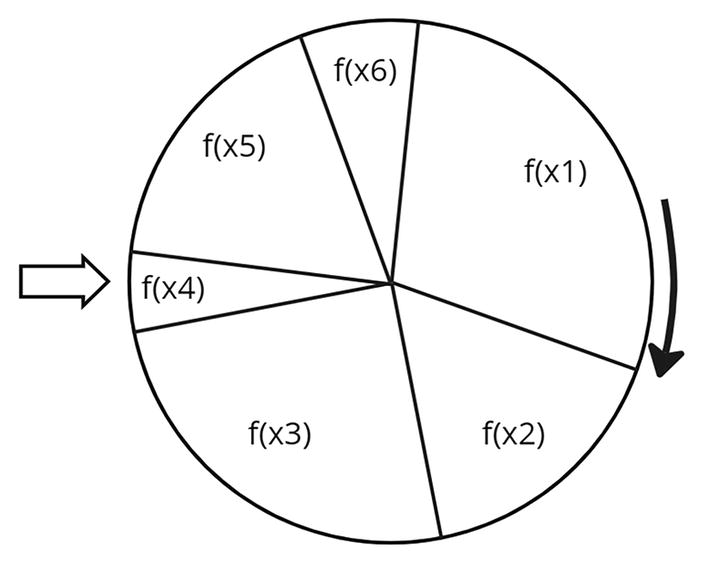
A wheel diagram presents the distribution of the functions. In the clockwise direction, f of x 1, f of x 2, f of x 3, f of x 4, f of x 5, and f of x 6. Each sector has a different proportion size. An arrow indicates a small sector of f of x 4.
Figure 6-9
Roulette of probabilities
The filtering algorithm using the roulette method is as follows:
-
1.
For each individual s__i, we calculate the probability of its selection using the formula .
-
2.
Divide the interval from 0 to 1 by |S| subintervals in proportion to the values calculated in the previous step.
-
3.
We spin the roulette. We generate a random number from 0 to 1, depending on which sector this number falls into, and that individual will be selected.
-
4.
We repeat step 3 until the required number of individuals is selected.
It is clear from the formula that the higher the subinterval allocated for an individual, or, in other words, the value of the objective function, the higher the probability that it will be selected.
The disadvantage of this method is that individuals with low adaptability will be very quickly excluded from the population, which will lead to premature stagnation of the algorithm. Another disadvantage of the method is that individuals with high adaptability will not always be selected. As a result, the new population may lose promising search directions.
Proportional Sampling Method
This method is considered a development of the roulette method. It is built on the following formula:
is the average value of adaptability of individuals of generation S.
The integer part of μ will indicate how many times an individual needs to be recorded in the intermediate population, and the fractional part shows its probability of getting there again.
Stochastic Universal Method
This is another variation of the proportional filtering method. But the selection is carried out in two stages.
-
1.
The n fittest individuals will be included in the new population. n is a free operator parameter.
-
2.
The remaining required number of individuals is selected using the roulette method.
As a result of this method, individuals with high adaptability can enter a new population more than once, which means they are more likely to interbreed with more than one individual.
Tournament Method
The method involves the formation of groups of n individuals each based on the population. In each group, an individual with the greatest adaptability is selected and will be included in the intermediate population.
n is a free operator parameter called tournament size. Obviously, if it is equal to 1, then the tournament filtering method will degenerate into the random filtering method. Typically the value of this parameter is 2 or 3.
The tournament filtering algorithm is as follows:
-
1.
In any way we divide the population into groups of n individuals in each.
-
2.
In each group, for each individual, we calculate its adaptability and select the most adapted individual. We include this in the intermediate population.
-
3.
Repeat steps 1 and 2 as many times as necessary. The final intermediate population will be the result of this method.
Rank-Based Method
The rank method is similar to the roulette method, only instead of the selection probability depending on the value of the individual’s objective function, this method uses the selection probability depending on the rank.
The rank is equal to the number of the individual in the list of individuals in the population, sorted by increasing the value of the objective function.
The rank filtering algorithm is as follows:
-
1.
We calculate the objective function for all individuals in the population.
-
2.
We sort the individuals in ascending order of the objective function.
-
3.
We number this list and assign each individual this number, which is called a rank.
-
4.
We match the rank to the value of the selection probability function. As a function, you can use a simple linear function of the form μ(r) = ar + b, a < 0. Where r - is a rank, a and b - are free operator parameters.
-
5.
Using the roulette method and using the probabilities from the previous step, we select the required number of individuals.
The main advantage of rank selection is the elimination of early stagnation of the genetic algorithm, since the method helps preserve population diversity.
Elitism-Based Method
This method is based on two steps. At the first step, the required number of best individuals is guaranteed to be selected. At the second stage, the missing quantity of copies is selected using any of the mentioned filtering methods. There are modifications of this algorithm when the second step does not select individuals from the remaining ones but generates new ones based on one of the initialization algorithms for the initial population.
The intermediate population may include, for example, 10% of the best individuals, and the remaining 90% are selected using the roulette method.
The main advantage of this method is that it guarantees the preservation of one or more of the fittest individuals.
Clipping Method
The clipping method is a type of filtering method based on elitism. It sets the threshold for the value of the objective function φ. We sort the population individuals in descending order of their objective function value. We randomly select an individual whose fitness is greater than the threshold value φ. We repeat the operation the required number of times.
Of course, this method can be modified, and individuals can be selected not by a random method but, for example, by the roulette method.
The main disadvantage of this method is the fact that there is a high probability that individuals with the highest adaptability will not end up in the intermediate population.
Crowding Method
The crowding method is based on the removal of close individuals from a population. For these purposes, the value of the function that determines the measure of proximity of individuals is used. For example, for these purposes, you can use the Euclidean norm.
The algorithm of this method is as follows:
-
1.
For a population, we form a matrix of distances between individuals of the population with the values of the proximity measure ψ(_s_1, _s_2).
-
2.
We select a cell in this matrix with the minimum value of the proximity measure and, with equal probability, exclude individual _s_1 or _s_2 from the new population.
-
3.
We continue to repeat step 2 until the required number of individuals remains in the population.
This method can be modified. For example, we could use tournament selection, where groups are formed not randomly but based on the values of proximity measures.
In addition to the considered methods of forming a population in two stages, like this:
it makes sense to consider the possibility of forming a population in three stages, like this:
S″(t) is an auxiliary population created, for example, using some mutation operator. Or maybe it makes sense to use different filtering methods both times.
Selection Operators
The purpose of these operators is to select from a population pair of individuals to be crossed. The basic principle of selection operators is that the probability of selecting the fittest individuals increases with the increasing population number.
The vast majority of selection operators are based on an assessment of the fitness of individuals. Figure 6-10 shows examples of the dependence of the probability of selection on the fitness value of an individual.
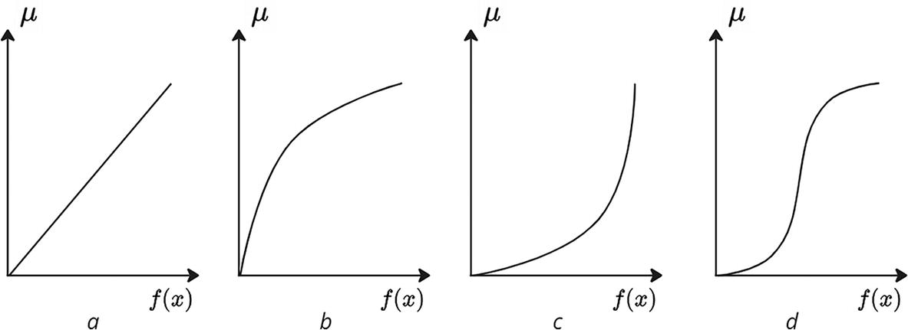
4 plots of mu versus f of x. a. It plots an increasing slope that starts from the origin. b. It plots a concave-down increasing trend that starts from the origin. c. It plots a concave-up increasing trend that starts from the origin. d. It plots an S-shaped curve that starts from the origin.
Figure 6-10
Examples of the dependence of the probability of selection on the fitness value of an individual
The sampling function in Figure 6-10a corresponds to proportional sampling.
In the case of the function in Figure 6-10b, individuals with average fitness scores have an equal chance of being selected as individuals with high fitness scores. Selection operators of this type slow down the convergence of the algorithm or the improvement in the average fitness of the population in favor of a more complete exploration of the search space. That is, the balance between intensity and breadth is shifted in favor of breadth.
Figure 6-10c shows the opposite situation: individuals with average fitness have a significantly lower probability of selection compared to individuals with high fitness, which increases the convergence of the algorithm but reduces the diversity of the population.
The nature of the function presented in Figure 6-10d allows the advantages of the two previous operator implementations to be combined.
In most cases, two individuals are used for crossing. To select them, you can use filtering operators, with a given target number of individuals equal to 2. But there are also several specific selection operators.
Panmixia Method
The essence of the method is a random, equally probable selection of parental individuals. The main feature of the method is that one individual can end up in several parental pairs. The method is simple to implement and quite effective. A well-known disadvantage of this method is its degradation with increasing population size. As the population size increases, the effectiveness of this method and the algorithm as a whole decreases.
The method algorithm looks like this:
-
1.
We assign each individual of the population a probability of
 .
. -
2.
Using the roulette method, we select the first individual for the parent pair.
-
3.
We select the second individual in the same way. If the second individual matches the first, then try again.
Selective Selection Method
This method is based on two conditions.
-
Only those individuals whose fitness is higher than or equal to the average fitness of individuals in the population become parents.
-
All individuals satisfying the first condition can form pairs with equal probability.
The method algorithm is as follows:
-
1.
For each individual in the population, we calculate the value of the objective function.
-
2.
We calculate the average fitness value of the population: .
-
3.
We select individuals from the population whose fitness is not lower than the average value calculated in the previous step.
-
4.
We assign each individual a probability: .
-
5.
Using the roulette method, we select a pair of parent individuals.
Because of the limitation of individuals who can participate in crossing, this method has high convergence, which can lead to early termination of the algorithm in the local minimum zone.
Inbreeding
This selection method is based on two stages. In the first stage, the first parent is selected randomly. In the second stage, the selection of the parental pair is carried out on the basis of probability, depending on the value of the measure of proximity to the first individual. The closer the individual is, the more likely it is that it will be chosen as the second parent in the pair. The Euclidean norm can be used as a measure of proximity.

The algorithm of this method is as follows:
-
1.
Using the panmixia method, we select the first parental individual from the population.
-
2.
For all remaining individuals, we calculate the measure of closeness to the first parent.
-
3.
We assign to each individual a probability value proportional to the value of the proximity measure: .
-
4.
Using the roulette method, we select the second parent individual based on the values of the probability function calculated in the previous step.
This method provides high search intensity by quickly dividing the population into separate groups of individuals close to each other.
Outbreeding
This selection method is based on two stages. In the first stage, the first parent is selected using the panmixia method. In the second stage, the parental pair is selected based on the probability depending on the value of the measure of proximity to the first individual. The further away the individual is, the more likely it is that it will be chosen as the second parent in the pair. The scheme of the outbreeding method practically coincides with the scheme of the inbreeding method, with the difference that for each individual we assign a probability value inversely proportional to the value of the proximity measure.
The outbreeding method, as opposed to the inbreeding method, prevents early convergence of the algorithm in favor of population diversity and, as a consequence, high diversification of the search.
The inbreeding and outbreeding methods can be modified by using other filtering operators, such as selective selection, to select the first individual. You can also try different formulas for measuring the proximity measure, which will also affect the operation of the algorithm. It is obvious you can build your own variation of the genetic algorithm based on a combination of several selective selection methods.
Restrictions
Many of the previously discussed mutation and crossover operators use a random variable to create a new individual. This gives rise to the possibility that the chromosome of a new individual will go beyond the permissible D values.
Let me remind you of formula D, which we used when setting up the optimization problem.
D = {X | G(X) ≥ 0} is the set of admissible values of the vector X, where G(X) is the function limiting the vector, consisting of components g_1(_X), g_2(_X), …, g∣G∣(X).
There are several options to solve this problem.
-
Use operators that generate only valid individuals.
-
Use algorithms for reducing conditional optimization problems to unconstrained optimization problems.
-
Use special methods developed for evolutionary algorithms.
Algorithms for reducing a conditional optimization problem to unconstrained optimization include the following:
-
Penalty method
-
Sliding tolerance method
Special methods include the following:
-
Death penalty
-
Static penalties
-
Dynamic penalties
-
Segregated genetic algorithm
-
Reduction method
-
Behavioral memory method
Sliding Tolerance Method
The essence of this method is that the condition G(X) ≥ 0 is satisfied with some accuracy. The value X is considered valid if 0 < κ(X) < υ and invalid if κ(X) > υ.
-
υ = υ(t): This is the sliding tolerance criterion depending on the iteration number.
-
κ(X): This is the functional defined over all limiting functions.
The sliding tolerance criterion should decrease with an increasing number of iterations t. As the value υ decreases, the boundaries of region D at which the value is considered acceptable also narrows. As a result, with a sufficiently high number of iterations, only valid values will be accepted for consideration.
The functional κ(X) must be created in such a way that when X belongs to the range of acceptable values D, κ(X) = 0. And also the value κ(X) increased as the value of X moved away from the nearest boundary of the range of acceptable values.
The method algorithm looks like this:
-
1.
Using a set of operators, the next generation of agents is created without taking into account the conditions of D. Next, each of them is tested. If κ(X) ≤ υ, that is, the value is admissible, we assume that the agent is admissible and leave it in the population.
-
2.
If κ(X) > υ, that is, the value is unacceptable, then we look for point X ″, which lies closer to the boundary of the region of acceptable values D. To do this, it is necessary to solve the problem of local unconditional optimization. We will talk about these algorithms as little later in this chapter)
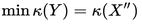
An equation reads min k left parenthesis Y right parenthesis = k left parenthesis X double quotes right parenthesis. with the termination condition being the expression κ(X″) ≤ υ. -
3.
When all agents become valid, we move on to the next iteration of the optimization algorithm.
The main advantage of this algorithm is that the permissible range of values narrows gradually as it approaches the solution of the optimization problem. In other words, in the first iterations the restrictions are much softer compared to the restrictions in the last iterations. This allows you to reduce computational resources in the first iterations of searching for the optimal solution.
Penalty Method
The essence of this method is to transform the conditional optimization problem.
An equation reads max determinant of X, f left parenthesis X right parenthesis equals f left parenthesis X asterisk right parenthesis equals f asterisk.
On the unconstrained optimization problem, we have this:
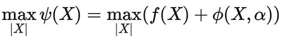
An equation reads max determinant of X, psi left parenthesis X right parenthesis equals max determinant of X, left parenthesis f left parenthesis X right parenthesis + phi left parenthesis X, alpha, right parenthesis, right parenthesis.
ϕ(X, α) is a penalty function whose value increases as X approaches the range of permissible values D.
α is the value of the penalty function parameter. The higher it is, the faster the value of the penalty function increases. See Figure 6-11.
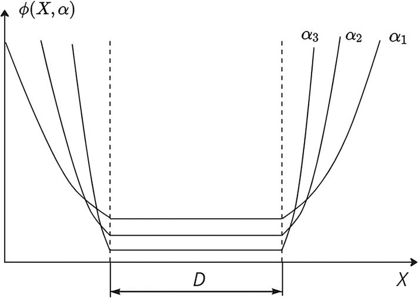
A graph of phi of X, alpha versus X. It plots three increasing trends of alpha 1, alpha 2, and alpha 3, with the mid range of permissible values of D.
Figure 6-11
Examples of penalty function graphs
Figure 6-11 shows examples of penalty function graphs. It shows _α_3 > _α_2 > _α_1.
The penalty function ϕ(X, α) is chosen in such a way that when the value of X is in the range of acceptable values, the value of the function ψ(X) differs very little from the value of the objective function f(X). This difference grows as X moves away from the range of acceptable values. It is worth noting that, despite the penalty functions, the values of X can still go beyond the range of acceptable values and be even more optimal than the values that satisfy the conditions of D.
In the general case, the penalty function formula has the following form:
α: This is a vector of penalty function parameters.
ρ: This is a vector of coefficients that allows you to change the influence of an individual component X on the final value of the penalty function.
L__i(g__i(X)): This is a functional over the limiting function. Typically the formula for this functionality looks like this:
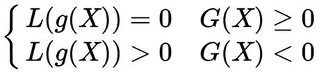
An expression of the function reads L of g of X = 0 at G of X greater than or equals 0 and L of g of X greater than 0 at G of X less than 0.
This formula shows that if X is in the region of acceptable values, then the value of the penalty function is equal to zero. As soon as X leaves this region, then the value of the functional begins to become greater than zero.
It would be logical to use the distance from point X to the nearest boundary of the region of permissible values D to calculate L. But often calculating this distance is a difficult task. Therefore, the other functionality is used more often.
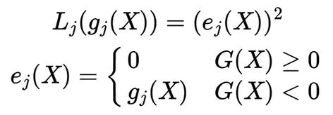
An equation reads L j of g j of X = e j of X squared with the expression of the function reads e j of X = 0 at G of X greater than or equal to 0 and e j of X = g j of X at G of X less than 0.
As a result, the algorithm of the penalty function method looks like this:
-
1.
We create an initial population X_0 and set the initial values of the parameters of the penalty function _α, ρ.
-
2.
Using a set of operators, we generate a new set of individuals X__t.
-
3.
We calculate the values of the unconditional optimization function for it.
-
4.
Using a set of operators, we again generate a new set of individuals X__t + 1.
-
5.
We check the conditions of restrictions. If the conditions are met and the condition for ending the search is met, then we consider that we have found the optimal solution and stop searching. Otherwise, according to some rule, we increase the values of the parameters (those genes that went beyond the permissible values) and again proceed to step 4.
The criterion for ending the search for an unconstrained optimization problem is most often the criterion for ending the search for conditional optimization.
The main disadvantage of this method is the significant complication of the function being optimized, which is the price to pay for eliminating restrictions.
Death Penalty
This method is based on simply discarding invalid individuals.
The algorithm for this method is as follows:
-
1.
The operator is executed, resulting in a new individual s′.
-
2.
The new individual is checked for admissibility; that is, a check is made to check the restrictions G(X) ≥ 0.
-
3.
If the individual successfully passes the test, then it remains in the new population. If not, then it is discarded and goes to step 1.
In this approach, there is a high risk that this algorithm will go in cycles; that is, each newly generated individual at the first step will not be within the range of acceptable values.
When the set of admissible values of the objective function is a multidimensional parallelepiped, then the check at step 2 is reduced to checking each gene of the individual s′ separately using the formula . If we are talking about an operator that changes only certain genes, then it is enough to discard the invalid gene and repeat the calculations of the operator again.
The disadvantage of this method is the need to repeatedly apply the operator, although perhaps not to all genes, but to some of them.
Static Penalties
The peculiarity of this method is that it takes into account not how strongly the restrictions were violated but how many of them were violated.
The penalty function for this method is as follows:
b is the free method parameter. It is a large positive number.
The value of the modified objective function in this case is calculated using the following formula:
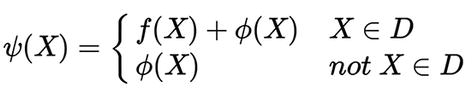
An expression of the penalty function. It reads the psi of X = f of x + phi of X at X belongs to D and the psi of X = phi of X at X does not belong to D.
The free parameter b must be chosen in such a way that the value of the objective function for values outside the acceptable range is significantly less than for acceptable values.
The main disadvantage of this method is that it does not take into account how many boundaries of permissible values were violated but takes into account the total number of their violations.
Dynamic Penalties
The penalty function for this method is as follows:
a, b, c: These are free method parameters:
L__i(g__i(X)): This function is calculated by the following formula:
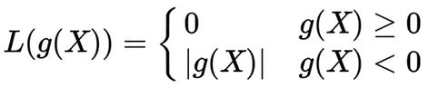
An expression of the function that reads L g of X = 0 at g of X greater than or equal to 0 and L g of X = mod g of X at g of X less than 0.
A special feature of the dynamic penalty method is that the penalty increases with the number of generations t. Recommended values for free parameters a, b, c are a = -0.5, b = 2.0, c = 2.0.
Segregated Genetic Algorithm
This algorithm uses not one but two penalty functions: ϕ_1(_X), ϕ_2(_X). The goal of this algorithm is to try to avoid penalty functions that are too large or too small.
The sequence of steps of this algorithm is as follows:
-
1.
For each individual s of the population, we calculate the values of both penalty functions: ϕ_1(_X), ϕ_2(_X).
-
2.
We sort each of the values ϕ_1(_X), ϕ_2(_X) in ascending order.
-
3.
We combine these lists into one sorted array of length 2|S| and remove the last |S| terms so that the length of the remaining part becomes equal to |S|. The remaining members will correspond to the individuals that violated the limits of acceptable values to the least extent.
-
4.
We apply genetic operators to the resulting population to obtain a new population, S__t + 1.
The problem with this method is the lack of clear recommendations on the choice of penalty functions: ϕ_1(_X), ϕ_2(_X).
Reduction Method
The reduction method is based on the use of the reducing function r(X), with the help of a transformation of an unacceptable individual s− to an admissible s′. The individual s′ obtained in this way is called restored.
There are a large number of different reducing functions. Let’s look at the mutation operator as an example. Suppose that as a result of applying this operator to a valid individual, the parent s has mutated some of the genes so that the descendant s− is invalid.
, where the overline of a gene is a symbol of its mutation.
Then the reduction can be done as follows:
-
1.
Sequentially for j = 1, 2, ..., n we return to the gene its previous value h__i, and at each step we check the individual for entry into the range of acceptable values. If at any of these iterations an admissible individual is obtained, then we stop the calculations. Otherwise, we move on to the next step.
-
2.
We successively return the pair of genes , , which is randomly selected from the set of genes, to their previous values. If at any of these iterations an admissible individual is obtained, then we stop the calculations. Otherwise, we move on to the next step.
-
3.
We perform actions similar to step 2, but for three genes.
-
4.
We perform actions for four genes and so on until an acceptable individual is obtained.
If the region of permissible values is a multidimensional parallelepiped, then the operator of projecting a point onto a multidimensional parallelepiped can be proposed as a reducing function, so that X ′ = L(X−), as shown in Figure 6-12 for a two-dimensional vector X.
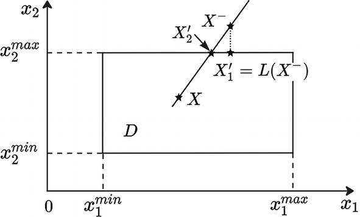
A graph of x 2 versus x 1. It plots a parallelepiped D for a two-dimensional vector X with the projecting points X 1 dash, X 2 dash, and x negative. The projecting lines in x 1 read x 1 minimum and x 1 maximum, while in x 2 reads x 2 minimum and x 2 maximum.
Figure 6-12
The operator of projecting a point onto a multidimensional parallelepiped
Please note that the reconstructed individual s′ can be taken both from .
Behavioral Memory Method
The idea of this method is to gradually connect restrictions. That is, the more iterations completed or the more populations created, the more restrictions are connected.
The algorithm for this method is as follows:
-
1.
When a certain number of iterations is reached, we add the first constraint.
-
2.
Using one of the already discussed methods of taking into account restrictions, we ensure that the majority of individuals in the population are acceptable.
-
3.
After a certain number of iterations, we activate the second constraint.
-
4.
Again, using one of the methods of taking into account restrictions, we ensure that the majority of individuals in the current population are acceptable under two conditions.
-
5.
And so on until all the conditions of the restrictions are taken into account.
Local Unconstrained Optimization Algorithms
The goal of these algorithms is to quickly search for a local extremum of the objective function.
This is necessary at the last stage of optimization to improve the best individuals. When the parameter values of these agents serve as starting points for local search algorithms, this allows you to achieve even better results from the genetic algorithm.
These methods are also used in some constraint accounting algorithms. We looked at one of these methods: sliding tolerance method.
There are three classes of stochastic local search algorithms: single-point/one-step, multistep algorithms, and multipoint algorithms.
One-Step Algorithms
In general, the formula for the one-step random search (RS) algorithm is as follows:

k is a positive number meaning the step size in the random direction D__k.
In its simplest form, the sequence of actions in a one-step local search algorithm looks like this:
-
1.
We randomly or otherwise select a starting point in the range of acceptable values.
-
2.
Randomly select direction D__k.
-
3.
We step toward this direction by the amount λ__k.
-
4.
If the condition f (X__k + 1) > f (X__k) is met, then we accept a new point and repeat all steps, but with the exact X__k + 1; otherwise, we return to point 1, using point X__k.
Of course, in the general case, the determination function X__k + 1 is not such a simple linear function but rather represents a more complex deterministic or stochastic function of the following form:
Selecting the Search Direction
The random line search (RLS) algorithm was proposed by H. J. Bremermann in 1970. The components of the direction vector D__k according to this algorithm are determined by the following formula:
That is, each component of the vector can be equally distributed between three numbers: -1, 0, and +1.
The step size according to the RLS algorithm is determined by the following formula:
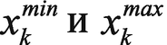
An equation reads x subscript k superscript min e e x subscript k superscript max.
: This creates the boundaries of the range of permissible values.
α: This is the free parameter of the algorithm. It takes values from 0 to 1.
The idea of the single-dimension perturbation search (SDPS) algorithm is to split the direction selection step into several steps, in which the vector D__k takes the following form:
That is, at each sub step i of the direction selection, only the i-th component of the direction vector is nonzero. Of course, this approach at each substep i ensures that the direction is searched only along the i-th coordinate direction. That is why the method is called single-dimension.
U(−1, 1) is a function that determines the value of the nonzero component of the direction vector. This function can be a uniform probability distribution function or a normal distribution function N(0, σ), in which the mathematical expectation is zero and the standard deviation is a free parameter of the algorithm.
Rules for Choosing Step Size
If the step size remains unchanged throughout all iterations, then the algorithm is called fixed step size random search (FSSRS), but if step size λ varies from iteration to iteration, then the algorithm is called adaptive step size random search (ASSRS).
There are a large number of algorithms for changing step λ in ASSRS algorithms. For example, in the local unimodal sampling algorithm, this value is calculated using a geometric progression. That is, if the condition f (X__k + 1) > f (X__k) is not met, then the step size is reduced according to the following formula:
η: This is a free algorithm parameter whose value ranges from 0 to 1.
In the SDPS algorithm, the step is reduced according to the following formula:
_λ_0: This is the initial step size; it is a free parameter.
k__max: This is the maximum number of iterations.
k: This is the current iteration number.
Obviously, according to this method, the step will decrease as it approaches the optimal value of the objective function
According to the adaptive maxing random search (AMRS) algorithm, step size λ should be calculated in two stages. At the first stage, the maximum permissible value λ__max is determined, which ensures the admissibility of all points of the form X__k + 1 = X__k + λ__max__D.
At the second stage, the step is calculated as a random variable located in the area U(0, λ__max). In this method, as in SDPS, the step decreases as the optimal value of the objective function is approached.
One of the classic algorithms that demonstrates the operation of one-step algorithms is the return algorithm when a step fails.
To obtain a new approximation, it uses a standard formula of the following form:
The algorithm diagram looks like this:
-
1.
We set the starting point X_0, as well as the initial values of the free parameters: _λ_0, which is the initial step length; _β, which is the maximum number of unsuccessful attempts (it is recommended to set this value equal to |X|); and η, which is a step λ reduction factor.
-
2.
Set the initial value of the counter of failed attempts as j=1.
-
3.
Using some algorithm, we calculate the vector D__k. Find the current value of X__k and the value of the objective function f (X__k).
-
4.
If the condition f (X__k + 1) > f (X__k) is satisfied, then go to step 2. If not, then go to the next step.
-
5.
If j ≤ β, then j = j+1, and go to step 2. If not, then go to the next step.
-
6.
We check the search end condition. If the condition is met, then we stop the calculations; if not, then we set λ = ηλ and go to step 2.
Figure 6-13 illustrates how this algorithm works.
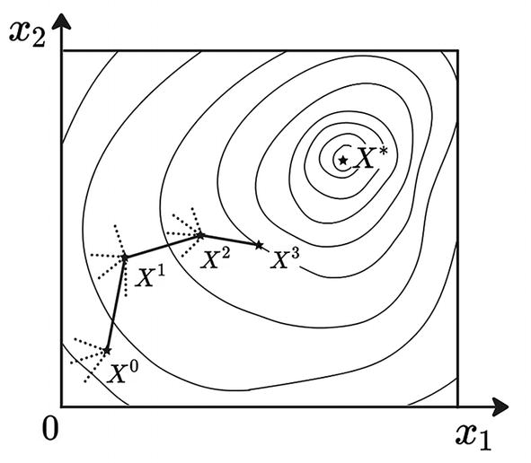
A graph plots x 2 versus x 1. It plots several trajectory lines in the loop pattern of X asterisk with the vector lines of X superscript 0, X superscript 1, X superscript 2, and X superscript 3.
Figure 6-13
Extremum search trajectory
Multistep Algorithms
In general, the formula for a multistep algorithm looks like this:
j is a free parameter. It specifies the number of steps in a multistep algorithm.
α__j is the set of free parameters. These are the weights of the previous search steps.
λ__k is the step size in the random direction D__k.
As in the case of a one-step algorithm, the new value X__k + 1 will be accepted if the condition f (X__k + 1) > f (X__k) is met. If the condition is not accepted, then according to some rule the step and direction are changed.
As an example, consider the following algorithm:
-
1.
Set the starting point _X_0 and the number of maximum attempts.
-
2.
Using some one-step algorithm, we calculate points _X_1 and _X_2.
-
3.
We calculate the direction vector D__k as the average search direction of _X_1 and _X_2.
-
4.
Using the formula X__k + 1 = X__k + λ__k__D__k, we calculate the following approximation: X__k + 1.
-
5.
If the condition f (X__k + 1) > f (X__k) is satisfied and the condition for ending iterations is met, then we stop the calculations. If the condition f (X__k + 1) > f (X__k) is met and the condition for ending iterations is not met, then increase the step length and go to step 2.
-
6.
If the condition f (X__k + 1) > f (X__k) is not met, then we make j attempts to increase the value of the objective function by changing the search direction; if this does not lead to a result, then we reduce the step length and go to step 2.
Figure 6-14 shows the operation of this algorithm.
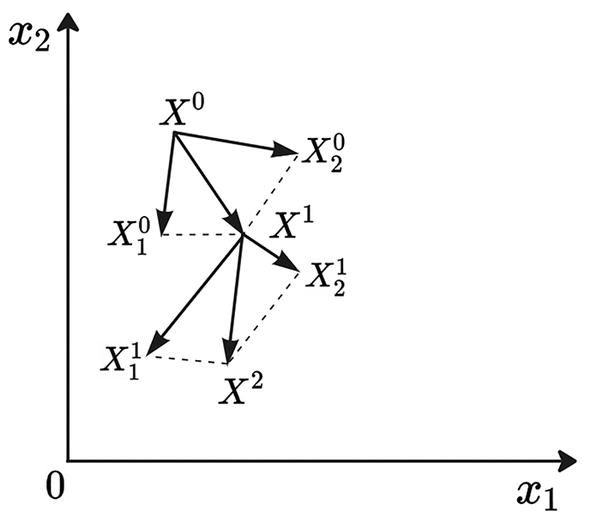
A graph plots x 2 versus x 1. It plots a point X 0 with three vector lines X 1 superscript 0, X superscript 1, and X 2 superscript 0, and three vector lines X 1 superscript 1, X squared, X 2 superscript 1 from a point X superscript 1.
Figure 6-14
Representations of how the algorithm works
Multipoint Algorithms
The idea of this group of algorithms is to use not one point, but several, to find the optimal value of the objective function.
Simplex or Complex Algorithm
Complex is a polyhedron with n>(|X|+1) vertices.
In its enlarged form, the algorithm is constructed from several steps.
-
1.
Generation of the complex
-
2.
Reflection of the top of the complex
-
3.
Compression of the complex
Generation of the complex
This operation must be carried out using any one-step local optimization algorithm.
-
1.
Choose a starting point.
-
2.
We generate the required number of vertices of the complex using the formula . In this formula ‖D‖ is the norm of the vector D, which means that the construction has unit length and parameter serves as a direction indicator.
Figure 6-15 demonstrates the complex generation process.
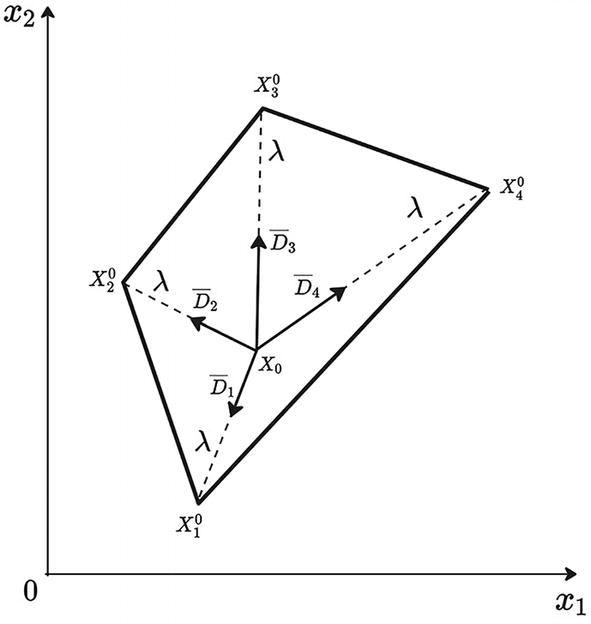
A graph plots x 2 versus x 1. It plots a trapezoidal with the vertices of X 1 superscript 0, X 2 superscript 0, X 3 superscript 0, and X 4 superscript 0, with the midpoint X 0. It has four vector lines D 1 bar, D 2 bar, D 3 bar, and D 4 bar from the midpoint X 0.
Figure 6-15
Complex generation
Reflection of the top of the complex
The purpose of this step is to reflect the vertex X__i of complex C through the center of gravity. Usually they reflect the vertex with the worst value of the objective function. In the resulting complex C´, all vertices, the edge of the i-th, coincide with the corresponding vertices of the original complex C. The i-th vertex is on a straight line passing through vertex X__i and the center of gravity of complex C.
The formula for calculating the reflected vertex is as follows:
λ is the coefficient of stretching of the complex. It is a free algorithm parameter. Of course, this parameter can be adaptive. So, for example, you can decrease the value of this as the number of iterations increases. Or you can increase it if there is no significant increase in the value of the objective function.
The center of gravity can be determined by the following formula:
According to this formula, the center of mass of the complex is the arithmetic mean of all vertices of the complex. The logic for determining the center of mass can be complicated by introducing significance coefficients for the vertices, depending on the values of the objective function. Thus, if some of the vertices have values of the objective function that are much better than the values of the remaining vertices of the complex, then the center of mass will be shifted toward them.
It is worth noting that this procedure is carried out several times.
Figure 6-16 shows an example of how vertex flipping works.
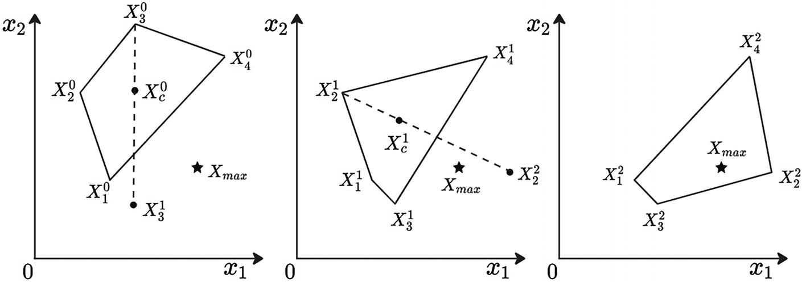
3 graphs plots x 2 versus x 1. Each plot has a trapezoidal with four vertices. a and b. The reflex of the vertices X 3 0 and X 2 1 are moved to a new vertex point X 3 1 and X 2 squared. c. The point X max is plotted inside the trapezoid.
Figure 6-16
Trajectory of change of the complex
Compression of the complex
This step is similar to the complex stretching step. It also involves reflection of the vertex X__i of complex C through the center of gravity. But in this case, the formula for obtaining a new vertex is as follows:
β is the free parameter of the algorithm. This is the so-called compression ratio. It must be less than 1.
A simplified algorithm of the method complex looks like this:
-
1.
We generate the initial complex _C_0 from the initial point _X_0. To do this, we generate the vertices of the complex using one or another algorithm.
-
2.
We calculate the values of the objective function at each vertex.
-
3.
We reflect the vertex X__i that has the worst value of the objective function and obtain a new vertex and a new complex C′. We calculate the value of the objective function at the new vertex.
-
4.
If the value of the objective function at the new vertex has improved compared to the old vertex, then we compress the complex and proceed to step 2.
-
5.
We check the search end condition. If it is satisfied, then we stop the calculations. Otherwise, go to step 2.
You can use the following conditions as search end conditions:
-
The maximum length of a complex edge does not exceed the specified solution accuracy.
-
The maximum difference between the values of the objective function at the vertices of the edges of the complex does not exceed the required accuracy of the solution.
Hypersphere Algorithm
The idea of the hypersphere algorithm is to generate random points evenly distributed over the surface of the hypersphere.
The algorithm looks like this:
-
1.
We set the initial point _X_0, the initial radius of the hypersphere _R_0, and the number of points on the hypersphere n.
-
2.
We generate n random points
 , uniformly distributed over the surface of a hypersphere of radius R__t with a center at point X__t.
, uniformly distributed over the surface of a hypersphere of radius R__t with a center at point X__t. -
3.
We calculate the value of the objective function at all points obtained and find the point at which this value is the best.
-
4.
Using any of the single-point optimization algorithms, we find the maximum of the objective function in the direction (-X__t) using the formula .
-
5.
We check the search end condition. If it is satisfied, then we stop the calculations. Otherwise, we set the point X__t + 1as the center of the sphere and go to step 2.
As with any optimization algorithm, there are many variations for this one. For example, you can change the radius of the hypersphere as it approaches the optimal value. You can also not search for the minimum of the objective function in the direction () but perform a step with a given length. Some generate points on the hypersphere not uniformly, but randomly in a certain sector.
The radius of the hypersphere can be used as a criterion for ending the search; it should not be less than the specified accuracy of the solution.
Random Search Algorithms
This group of algorithms makes significant use of random variables to find a local extremum. This group of algorithms can also be used to find the global optimal value of the objective function and generate the first generation of genetic algorithm.
Monte Carlo Algorithm
This algorithm can rightfully be considered the ancestor of all other random search algorithms. It is often used to generate starting points for other more complex algorithms.
It consists of several steps.
-
1.
Set the final number of iterations n and set t=1.
-
2.
Using any random number generator, we generate the point X__t + 1 and calculate the value of the objective function at it. Increase t by one t=t+1.
-
3.
If the number of iterations t exceeds the maximum number of iterations n, then we stop the calculations. Otherwise, repeat step 2.
Simulated Annealing Algorithm
One of the oldest algorithms that has proven its effectiveness in solving many problems. The idea of the algorithm was based on a mechanism for correcting defects in the crystal lattice of metals.
Defects in the crystal lattice of a metal are often caused by the fact that some of the atoms occupy incorrect (nonoptimal) positions. At normal temperature, they do not have enough kinetic energy to overcome the potential barrier and take the correct position; that is, the crystal lattice is in a state of local energy minimum. To overcome the barrier and bring the system from a local minimum to a global one, the system is heated. In this case, atoms occupying the wrong position acquire energy and can take the correct places. In this case, as the metal cools, the atoms lose energy, and the system again stabilizes in a state of local minimum.
If this analogy is applied to optimization theory, then each local minimum can be considered as a defective crystal lattice. Improvement of the solution occurs due to periodic changes in the found solution, the intensity of which decreases as it approaches the optimal solution.
The main difference between this algorithm and others is that it allows periodic deterioration of the solution to the optimization problem.
The algorithm diagram looks like this:
-
1.
We set the starting point X_0, and _ξ - is a positive threshold, which will decrease as the iterations of the algorithm increase. It represents a random variable with a mathematical expectation. This gives meaning to the temperature of the annealed metal.
-
2.
We randomly generate a new value in the vicinity of the current approximation X__t + 1 = ω(X__t).
-
3.
The solution X__t + 1 becomes a new approximation with a probability determined by the formula
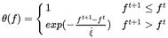
An expression of the function reads theta of f = 1 at f superscript t + 1 less than or equal to f superscript t and theta of f = exponential of negative f superscript t + 1 minus f superscript t, over xi tilde at f superscript t + 1 greater than f superscript t.Random Restarts Algorithm
Random search algorithms have one big drawback: they require a large number of tests. This algorithm belongs to the class of two-phase random search algorithms. Such algorithms include two search phases: global phase and local phase. The goal of the first phase is to generate a certain number of random points. The second phase consists of using local search algorithms, where the starting point is the point formed in the first stage.
The general scheme of this algorithm is as follows:
-
1.
Set the total number of starting points n.
-
2.
Generate coordinates of point X__t.
-
3.
Using point X__t as the initial point, we find the local extremum using one of the previously presented local search algorithms.
-
4.
If the number of starting points is less than n, then we return to step 2; otherwise, we complete the calculations.
The danger of this approach is that some local solutions may be found many times, while others may not be found at all.
Iterated Local Search
The idea of this algorithm is to use perturbation of the previous solution found instead of generating starting points randomly. The problem with this approach is that it is necessary to overcome the local extremum zone. Otherwise, the local search algorithm will return to this extremum again. Therefore, on the one hand, perturbation should be strong enough, but it should not be too strong. Otherwise, this algorithm will differ little from the random restarts algorithm.
The sequence of actions of the iterated local search algorithm is as follows:
-
1.
We generate a random initial value _X_0 belonging to the range of acceptable values.
-
2.
I use point X__t as the starting point; using any local search algorithm we find the solution .
-
3.
Perturbate point
 and get point X__t + 1.
and get point X__t + 1. -
4.
If the condition for ending the search is met, then we stop the calculations; otherwise, we return to step 2.
Perturbation
The perturbation procedure can be built on the basis of any population algorithm. Often a genetic algorithm is used for these purposes. There are also a large variety of perturbation implementation options based on algorithms using random variables.
The main thing is that perturbation meets the following requirements:
-
It must be strong enough to overcome the area of attraction of the current local extremum.
-
It doesn’t have to be completely random.
-
It can use the history of solutions found.
Summary
In this chapter, you learned the basics of population algorithms, in particular the genetic algorithm. I showed the logic of a number of operators of this algorithm, which will help create the first version of a library of optimization algorithms.
It is worth noting that the genetic algorithm is far from the only algorithm from the population class.
Also, to solve the problem of searching and optimizing profitable strategies, algorithms such as the particle swarm optimization algorithm, the artificial immune systems algorithm, and many others are of interest. The implementation of these algorithms, as well as an increase in the number of operators used, can be considered a growth point for our system.